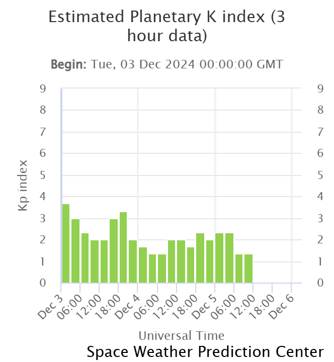

<!DOCTYPE html>
<html>
 <head>
    
  </head>
  </html>


<h1><b>ENG Computer Laboratory 2023/24</b></b></h1>


<h2>Student URN: 6857600</h2>
<hr>
<h2 style="font-family:calibri;"><b>Conference paper: Bridge Deck Repairs</b>/h2>
  <hr>
  <!style for tables>
  <style>
    table {
      font-family: arial, sans-serif;
      border-collapse: collapse;
      width:30%;
      
    } 
    
  td, th { 
  border: 1px solid #dddddd;
    tex-align: left; 
  padding: 8px;
     } 
    
  tr:nth-child(even) { 
  background-color: #dddddd;
    }
  
  
  
  
  </style>

  <style>
    p.ex1 {
      margin-left: 250px;
    }
    </style>
</head>


 
  
 <meta name="viewport" content="width=device-width, initial-scale=1">
  <link  rel="stylesheet" href="https://www.w3schools.com/w3css/4/w3.css">
 <style>
  .myslides {display:none;}
 </style>
   
   
   
  
 
 
 
 
 
 
 
 
 
 <!table of contents>
 <table>
 <tr> 


<th><h3>Table of contents</h3></th>
 </tr>
<tr>
 <td><a href="#Abstract">Abstract</td>
 </tr>
 <tr>
 <td><a href="#Introduction">Introduction</td>
   </tr>
<tr>
<td><a href="#Analysis and discussion">Analysis and discussion</td>
</tr>


<tr>
<td><a href="#References">References</td>
</tr>
</table>

 
 
 
 
 
 
 
 <h3 id="Abstract">Abstract</h3>
   <p class="ex1">
    <pre>
   A geomagnetic storm is a large disturbance which occurs in Earth’s magnetosphere. It happens when there is an exchange of energy from the solar wind into the space. Geomagnetic storms can destroy satellites or develop a strong current within wires. There are different kinds of Solar phenomena which are the things such as Coronal mass ejections (CMEs), solar prominence, filaments, sunspots and solar flares. The effects on technological systems including power grids, satellite communications, and navigation systems are caused by coronal mass ejections and solar flares. This article includes the mechanisms behind geomagnetic storms and their effects in the past, and the significance of modern monitoring in reducing potential risks. 
    </pre>
  </p>

   
 
 <hr>
   <h3 id="Introduction">Introduction</h3>
    <p class="ex1">
     <pre>
      Geomagnetic storms are considered as an important natural disaster depending to their potential to upset critical system. The solar wind which is known as the charged particles from sun’s continuous outflow, links with Earth’s magnetic field brings space weather events. The major event is known as the Carrington event of 1859 and the March 1989 storm, these two events display the effects on latest technology (NESDIS, 2023). 
     </pre>
  </p>


 
  
 <hr>
 <h3 id="Main article">mainarticle</h3>
 <pre>
   <p class="ex1">
 Mechanisms Behind Geomagnetic Storms
Geomagnetic storms occurs when there is a massive exchange of energy from the solar wind to the space near earth. For example, attack on magnetic field by CME’s or developed solar wind streams causes geomagnetic storms. A coronal mass ejection (CME) is a plasma and magnetic energy from the sun’s corona that can exceed 1500km/s. After making it to the earth’s and compressing to the magnetic field, letting the charged particles are entering to the atmosphere near the poles where they form auroras (NESDIS, 2023). Moreover, another solar wind disturbance that makes geomagnetic storms to occur more is a high-speed solar wind stream (HSS). HSS’s produce co-rotating interaction regions of CIRs when it interacts with the slower-moving solar wind. These situations are often correlated with geomagnetic storms. Although it is less than CME storms, it can accumulate more energy in Earth’s magnetosphere over a long period of time. CIRs are knowns as making recurring geomagnetic disturbances and often occurs when the phase of the solar cycle diminishes. When CIRs make it to Earth, it creates auroras and changes the satellite and communication systems (NOAA,2023).

How Geomagnetic Storms affect Earth’s Infrastructure
A geomagnetic storm also has impact on power grids and earth’s magnetic field. For instance, it can cause blackouts and interfere with satellites and high frequency radio communications (USGS 2023; NESDIS,2023).

    
     Geomagnetic storms also produce auroras on Earth and during these events, Auroras can be more visible as far south as Alabama and northern California (NOAA’s, n.d.). To see the auroras   as clear as possible, the viewing area should be with minimal light pollution and clear skies with no clouds around.
   </p>
 </pre>
   
 
 
    <h3>The geomagnetic activity which is driven by Earth’s magnetosphere with solar wind is modest to quiet and there is no effect on Earth from major solar events like coronal mass ejections which led auroras to be visible with limited polar regions</h3>
    
    
    
    <p class="ex1">
     <pre>
     Moreover, the main drawback of increased radiation during geomagnetic storms have effect on astronauts such as it can lead to health risk on during spacewalks or long-during missions (NOAA, 2023).
  </p>
     </pre>
   
    
   
    <h3 id="Analysis and discussion">Analysis and discussion</h3>
<h4>Table 1: Geomagnetic storm impacts on technological systems</h4>
<h3>This table shows the influence of geomagnetic storms on technologies and the procedures to reduce these impacts</h3>
<table id="Table_Intext">
 
 <tr>
  <th>System</th>
  <th>Effect</th>
  <th>Mitigation Strategies</th>
 </tr>

 
 
 <tr>
 <th>Power grids</th>
 <th>Transformer overheating, blackouts</th>
 <th>Orbit perturbations, communication loss</th>
 <th>Protecting shielding, operational changes</th>
</tr>


<tr>
<th>GPS & Navigation</th>
 <th>Signal disruption</th>
 <th>Real-time space weather forecasting</th>
</tr>


 <tr>
<th>Aviation</th>
  <th> Radio blackouts,navigation errors</th>
  <th>Polar route adjustments,frequency switching</th>
   </tr>

</table>


<h3>Geomagnetic storm effects on technological systems. This table provides information about how geomagnetic storms can damage various technological systems and highlights the mitigation strategies used to reduce these impacts</h3>
   


<pre>
  <p class="ex1">
  Historical and Recent Events
In the past, the Carrington event is the most powerful event ever recorded creating widespread telegraph damages and making auroras more visible near the equator. Even though the most influential storm on record was the Carrington Event (1859), recent storms such as the April 2023 event have proved that even modest storms can make significant technological harms. The geomagnetic storm in April 2023 caused widespread auroras and affected satellite operations because of a CME traveling approximately two million miles per hour have reached a G4 level on NOAA’s storm scale.

    
    
    Monitoring and Forecasting
The progress of space weather forecasting has helped to predict geomagnetic storms. Satellites such as NOAA’s DSCOVR is regularly observing solar wind conditions. To predict the intensity of storms, DSCOVR gathers information on the speed, density and magnetic field of solar wind which are the key factors. NOAA’s Space Weather Prediction Center is to supply warnings and alerts from the data.
NOAA’s Space Weather Prediction Center provides alerts to help power grids and satellite systems to take advantage of the proactive measurements to prevent possible risks.
 A lot of efforts on forecasting have been successful for reducing the impact on the technology-dependent system.
  
   Conclusion
Modern technology system is getting affected by geomagnetic storms directed by solar phenomena like coronal mass ejections (CMEs) and solar flares. Significant events that happened in the past such as like the Carrington Event of 1859, mentioning the ruinous possibilities of severe storms. Additionally, to improve the capacity to anticipate and reduce their effects there are important satellites such as like NOAA’s DSCOVR. Agencies like NOAA’s Space Weather Prediction Center is for timely alerts enables to take preventive measures also helping to avoid risk of disruption to power grids, satellites and communication networks. To prevent any challenges posed by space weather investigation in predicting capabilities are critical to technology-dependent systems.
   
   
   </p>
 </pre>
 


 
 

   
 
 
 

   
   
   
   
   
   
   
   
   
   
   
   
   
 

   
   
   
   
   
   
   
   
  


     


                                

<a href=”url”>link text</a>
<h3 id="References">References</h3>
<p>
<pre>
 NESDIS. (2023). Solar Wind, Geomagnetic Storms, and Coronal Mass Ejections. NOAA. Available at: NESDIS
NOAA. (2023). Large Geomagnetic Storm Hits Earth. NESDIS. Available at: NOAA
USGS. (2023). Geomagnetic Storms That Reshaped Society. U.S. Geological Survey. Available at: USGS
NOAA. (2023). Preparing the Nation for Intense Space Weather. Available at: NOAA SWPC
                                 
</pre>
                                
</p>


   

    
  
    


    


   
  
       
     
                      
       
                     

 

    

  
  
  
 

 
   
  
                               
 
 
 

                      


                               
                               
            
                               
                              
                              
                                 
                               


                                


                                 
                              


                                 
           

     


   


    
    

 


 
